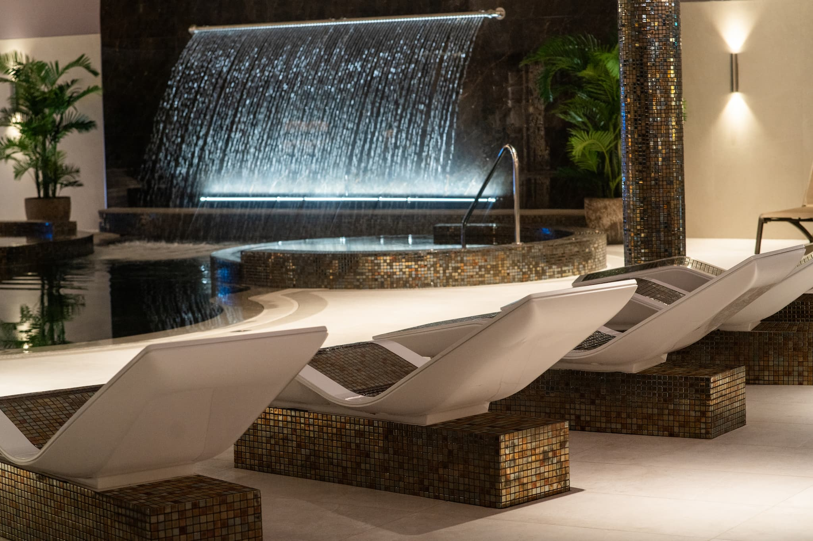
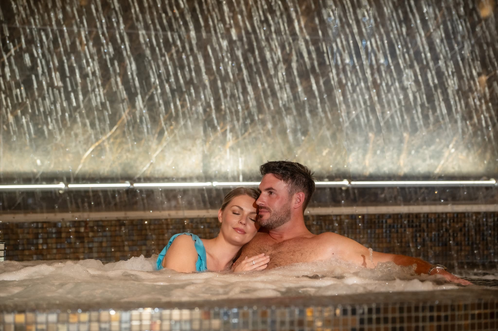
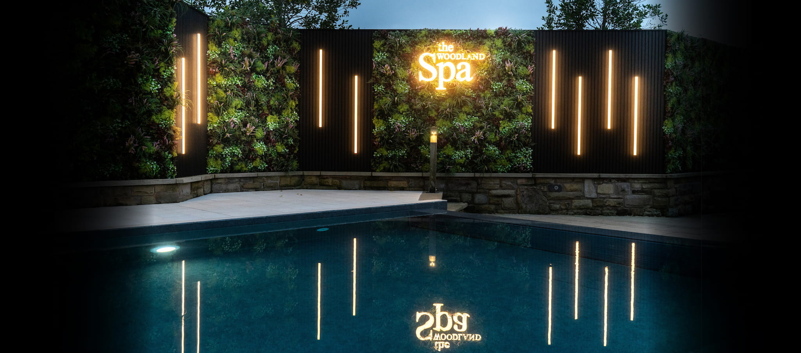
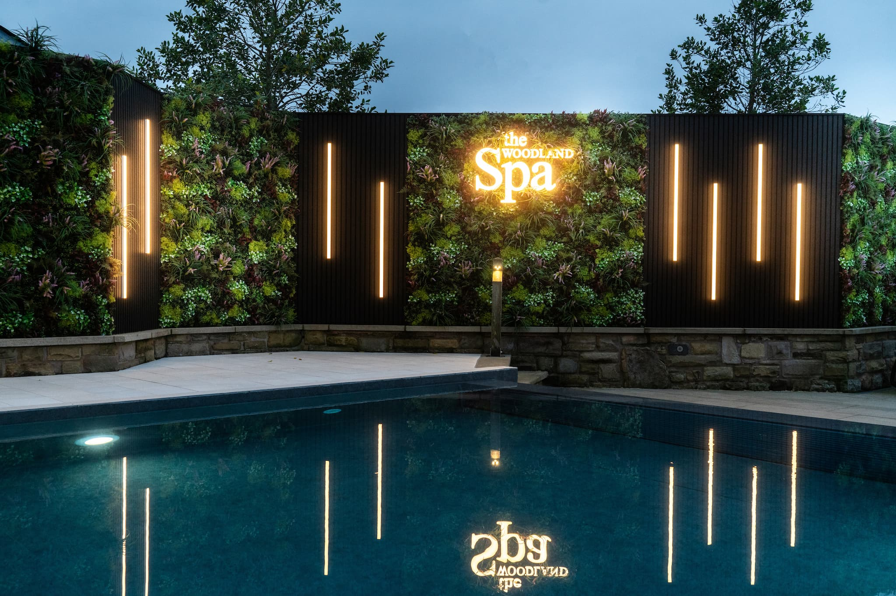

Hydrotherapy Pool
Powerful massage jets ease muscular tension and encourage circulation.

The experience
It is all yours for the day
The Woodland Spa has doubled in size, but not in daily guest numbers. Move instinctively from warming rooms to fresh air, from powerful hydrotherapy to perfectly still water. Robes, flip-flops and towels are waiting. Your only decision is where to begin.
Powerful massage jets ease muscular tension and encourage circulation.
A warm, low-lit sanctuary where stress simply floats away.
Swim through into fresh air, then settle into a spacious hot tub.
Four hot tubs, water cannons, massage stations and a waterfall rain shower.
An elevated infinity-edge spa pool with uninterrupted Lancashire views.
The UK’s first multi-sensory KLAFS ice lounge—an exhilarating cool-down.
Traditional sauna, gentler saunarium, steam and salt-steam experiences.
Bespoke relaxation areas, sensory lighting and room to reconnect.
South-facing loungers, firepits, retractable roof, food and cocktails.
Loungers beneath a retractable roof, because rain need not stop play.
Bubbling reflexology massage stimulates pressure points in the feet.
A private 2–4 person mineral-mud ritual to cleanse and nourish the skin.



Everything, beautifully joined up
Build spa access, a room, treatments for every guest and your table in one seamless itinerary.
Build your experience →